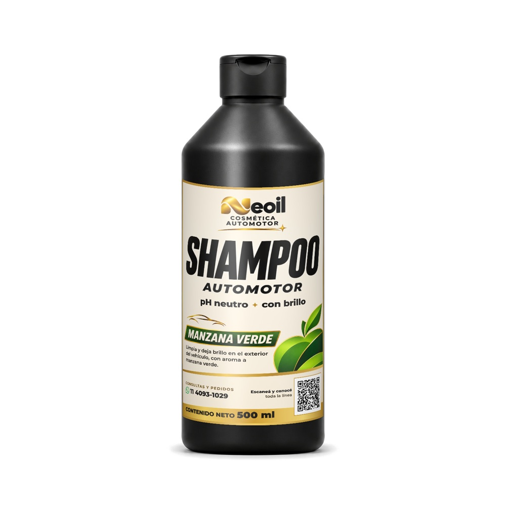
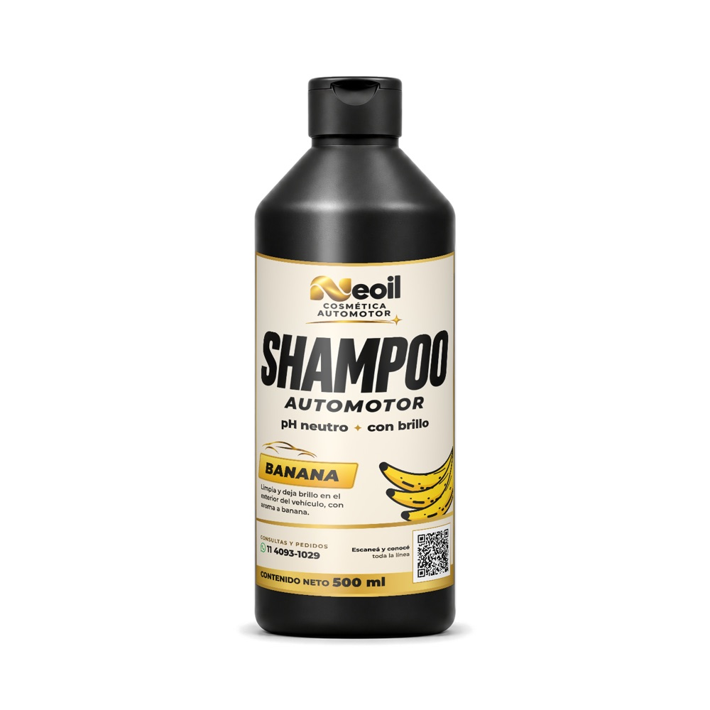
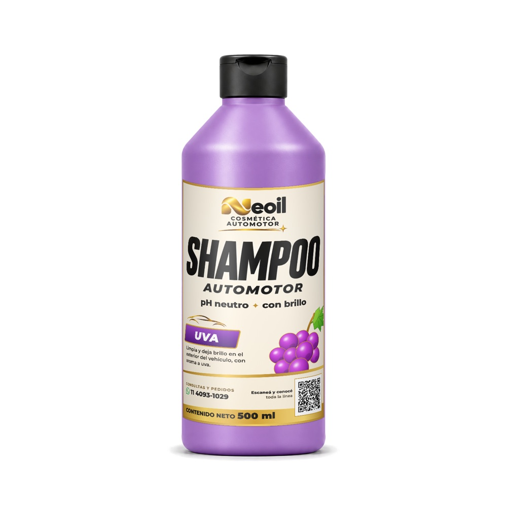

Lavado exterior
Shampoo neutro.
Shampoo para el lavado manual del auto. Su fórmula de pH neutro limpia la carrocería y deja brillo en la pintura.
Contenido neto: 500 ml
Consultar por WhatsApp
Tres aromas.



Para qué sirve.
- Lavar la carrocería a mano.
- Dejar brillo después del lavado.
- Uso frecuente, por su pH neutro.
Cómo se usa.
- Mojá el auto para sacar el polvo suelto.
- Diluí el shampoo en un balde con agua.
- Lavá con guante o esponja, de arriba hacia abajo.
- Enjuagá con agua y secá con un paño.